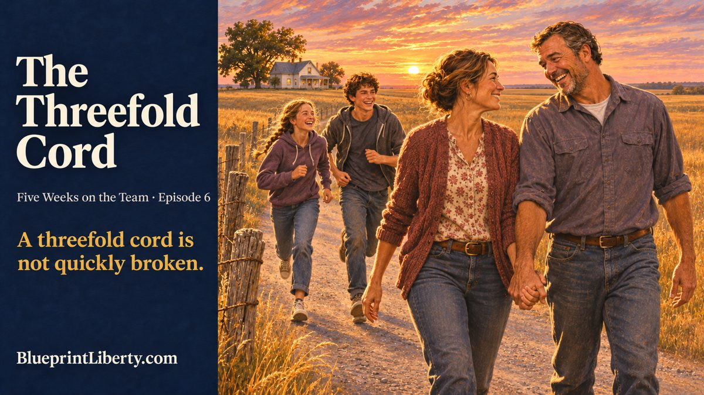

← Runtime Republic · Five Weeks on the Team
Five Weeks on the Team · Episode 6 of 10 · about 7 minutes · Draft under review

Tom and Karen Reyes had been married twenty-two years. They had three children: Ava in middle school, Luke in high school and Sam away at college. When they first came to Pastor Dan, they were barely speaking. They weren't fighting. They were just tired, and they were living like two roommates who shared a mortgage and a calendar.
Since then, the private team of three had met every week: Tom, Karen and Pastor Dan. The Life Goals tab had shown them that their ten-year lists overlapped more than they disagreed. All three children through school without debt. Staying in the house. Someday, the ocean with Ava. But knowing what you want and moving toward it are two different things, and the hardest weeks were still ahead.
Dan asked them to go deeper. "Before you write anything else down, I want each of you to write, on your own, what you hoped this marriage would look like at twenty-five years. Don't share it yet."
The app asked each of them privately, the way it always asks first. Tom wrote about the lake, about retiring at sixty-five, and about the kids coming home for Thanksgiving with grandchildren someday. Karen wrote about being heard. She wrote about a house that felt calm, and about finishing the nursing degree she had put aside when Sam was born.
When they shared them on Sunday night, they were quiet for a long time. Their hopes weren't the same, but nothing on either list was against the other. Tom had never known about the nursing degree. Karen had never heard him say the word "grandchildren."
That same week, something else happened. The big team's Family Court Lean Workshop had started its first cards. Like every workshop in the app, it's about process, not people. There are no names, no case numbers and no faces, only the stations a family passes through when one household becomes two. Karen read the cards late one night after Tom went to bed. She hadn't meant to. She was curious, and maybe a little afraid of what she would find.
The stories were hard to read. One family spent the money they had saved for their children's college on experts who billed by the hour. Another family's children packed a bag every Sunday night for two years. A father drove three hundred miles round trip each week to see his son for a few hours. A mother waited months for a hearing while the house sat unsold and both parents paid rent somewhere else. Every card ended the same way. The app asked the person who lived it what they would fix, and their answer was written there in their own words.
Karen didn't sleep much that night. In the morning, she asked the app one question. "What would our budget look like as two households?"
The app didn't tell her what to do. It acted as an ombudsman, the way it always does, and it showed her the numbers she asked for and nothing more. It took their real weekly budget and split it into two columns. Two mortgages or rents. Two electric bills, two internet bills, two sets of groceries. Two cars needing insurance on separate policies, and Luke's insurance on top of that. Sam's tuition line stayed the same, but now it had to come out of two smaller budgets instead of one. At the bottom, the app showed the lines it could not fill in: legal fees, expert fees, counseling for the children. It marked each one as unknown, because missing data is never zero. Those unknown lines were the ones that scared her most.
She showed Tom that evening. He looked at the screen for a long time. Then he said, "I don't want to be a family on one of those cards."
"Neither do I," she said. "But I don't want to stay together just because it's cheaper, either."
That was the most honest thing either of them had said in a year. Dan said so on Sunday.
So the three of them went to work. They did it the way the team does everything, in small steps, written down and checked every week. They didn't try to fix twenty-two years in one night. They picked three goals for the next five weeks.
The first goal was Karen's. She would look into finishing her nursing degree, and Tom would be the one to find the program and the cost. His job was to say it out loud at the table so she would know he meant it.
The second goal was Tom's. Once a week, they would take the evening walk they used to take before the kids were born, with no phones and no budget talk. The app couldn't verify that one, so they agreed to just check the box and trust each other. Dan said that was the point.
The third goal was shared. They would sit down with all three children, together, and tell them the truth in words a middle schooler could understand: Mom and Dad had a hard year, and they were working on it with Pastor Dan.
The third goal was the hardest. Ava cried. Luke asked if they were getting a divorce. Sam joined on a video call from his dorm room and said, very quietly, "Thank you for telling us. Most of my friends found out after."
Each week, the private team met for twenty minutes. Each person reported on the goals they owned. Nothing was hidden, and nothing was graded. Some weeks went well. One week, Tom skipped the walk and Karen didn't bring it up, and Dan asked about it anyway. They talked it through, and the next week they walked twice.
At the end of the five weeks, Karen had an enrollment date for the spring semester. They had taken seven walks. Their children had stopped asking whether their parents were splitting up, and started asking whether they could come on the walks too.
On the last Sunday, Dan read them a few verses from Ecclesiastes, chapter four. "Two are better than one; because they have a good reward for their labour. For if they fall, the one will lift up his fellow." Then he closed with the twelfth verse. "And if one prevail against him, two shall withstand him; and a threefold cord is not quickly broken."
"That's this team," he said. "Two of you, and the Lord in the middle. I'm just the one keeping notes."
Before they closed the tab, the app asked them one last question, the one it asks everyone who reads the family court cards. "What would you fix?"
Karen wrote her answer: "Give families the Life Goals tab before they ever get to the courthouse, and a team to work it with."
Tom wrote his underneath hers: "Show every couple the two-column budget, with the unknowns marked, before anyone bills them by the hour."
Both ideas went onto a card in the workshop, the first one in the folder for families that never reached court.
← Episode 5 · Series index · Episode 7 →